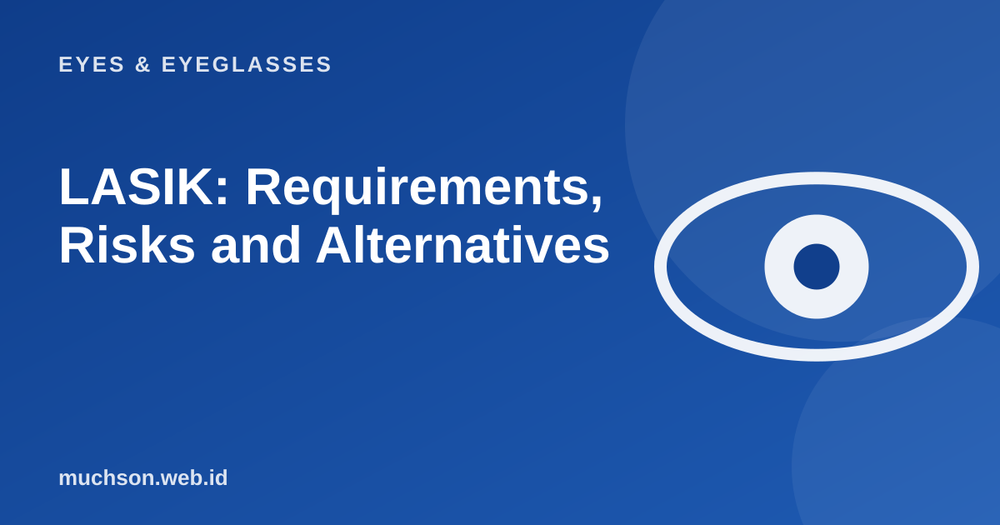

Home › Articles › Eyes & Eyeglasses
Eyes & EyeglassesLASIK: Requirements, Risks and Alternatives
Many people tired of glasses ask about LASIK. The procedure is widely used, but it is not for everyone and not without risk. This article helps you prepare the right questions for an eye specialist.

What does LASIK do?
LASIK reshapes the curvature of the cornea with a laser, so incoming light focuses exactly on the retina. In myopic eyes, the central cornea is made flatter. In plus eyes it is made steeper, and for cylinder the curvature is evened out. To reach the inner layers of the cornea, the doctor creates a thin layer (a flap) and lifts it before the laser works.
Text description of the diagram
- A thorough exam: cornea, stable prescription, eye condition
- Creating the flap: a thin layer of the cornea
- The laser: reshapes the cornea
- The flap is put back: then recovery
Who usually qualifies?
- Usually adults (generally over 18), with a glasses prescription that has been stable for at least a year.
- The cornea is of adequate thickness and shape, and healthy.
- Not pregnant or breastfeeding.
- No eye conditions or diseases that interfere with healing.
- Realistic expectations: the aim is to reduce dependence on glasses, not a guarantee of perfect vision.
Risks and side effects to ask about
| Item | Explanation |
|---|---|
| Dry eye | Fairly common after surgery, usually improves, sometimes persists |
| Glare and halos at night | Can happen, especially with large pupils |
| Over- or under-correction | May need adjustment or a follow-up procedure |
| The minus returning | If the eyeball is still changing, or in some people over time |
| Flap complications or infection | Rare, but possible |
Alternatives
Important
LASIK does not prevent presbyopia. After about age 40, reading glasses may still be needed. You need to know this before you decide.
FAQ
Is LASIK permanent?
The change to the cornea is permanent, but the eye can still change with age or growth. That is why a stable prescription is a requirement.
Does LASIK hurt?
The procedure is done with numbing drops so it is generally not painful, though there is a sense of pressure. Afterwards the eyes may feel sore or dry for a while.
How long before I can resume normal activities?
Many people recover vision within a few days, but there are restrictions and routine check-ups. Follow the doctor's advice.